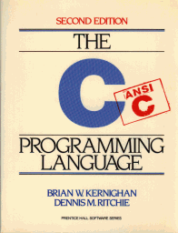

The C Programming Language, Second Edition
by Brian W. Kernighan
and Dennis M. Ritchie.
Prentice Hall, Inc., 1988.
ISBN 0-13-110362-8 (paperback), 0-13-110370-9 (hardback).
- The book is readily available at large bookstores (especially
university ones around beginning of term) but tends not to be
stocked at the mall because it's treated like a textbook.
Ordering it online is easy, for example at
Amazon.com,
Barnes & Noble,
Borders,
Blackwell's, or
Fatbrain.
You can also look it up at the
Prentice-Hall home page.
Kernighan, a relatively uncommon name, is a good search
term to find it quickly at all of these places.
If you are curious, a GIF-format graph
of its sales rank at Amazon.com for the last couple of years is available.
-
Here is a list of errata in the published version;
many of these are corrected in recent printings.
- The history of the language is traced in
``The Development of the C Language'', from HOPL II, 1993:
browsable,
or printable
PostScript or
PDF.
This and other historical material, including early manuals and compilers,
is available at
Dennis Ritchie's home page, while
Brian Kernighan's
home page collects pointers to his work on C and diverse other languages
and systems.
The book has been translated into many languages, including
- Albanian: Gjuha e Programimit C, Shtëpia Botuese Euroilindja, Tiranë
- Bulgarian: Programiyat Yezik, ZeST Press Publishing House, ISBN 954-91165-9-X
- Czech: Programovací C, Computer Press, a.s., ISBN 80-251-0897-X
- Chinese: C Programming Language, Prentice-Hall, ISBN 0-13-11693-7
- Chinese: The C Programming Language, China Machine Press / Prentice-Hall, ISBN 7-111-07589-7
- Chinese: The C Programming Language, Prentice-Hall PTR / Tsang Hai (Taiwan) ISBN 986-154-142-X
- Danish: C Programmering, Teknisk Forlag, ISBN 87-571-1347-5
- Dutch: C handboek, Academic Service, ISBN 90-6233-488-1
- Finnish: C Ohjelmointi, IT Press, ISBN 951-826-138-5
- French: Le Langage C, Masson, ISBN 2-225-82070-8
- French: Le Langage C: Norme ANSI, Dunod, ISBN 2-100-05116-4 (2nd ed.)
- German: Programmieren in C, Hanser, ISBN 3-446-15497-3
- Greek: E Glossa Programmatismou C, Kleidarithmos, ISBN 960-209-053-7
- Hebrew: C Programming Language, Or-Am, 1986 (first edition)
- Hindi: C Programming Language, BPB Publications, ISBN 81-8333-067-3
- Hungarian: A C Programozási Nyelv, Müszaki Könyvkiadó, ISBN 963-10-6100-0 (first edition)
- Hungarian: A C Programozási Nyelv, Müszaki Könyvkiadó, ISBN 963-16-0552-3 (second edition, 2003 (hbk))
- Hungarian: A C Programozási Nyelv, Müszaki Könyvkiadó, ISBN 963-16-0552-3
(new cover, 2006 (pbk))
- Italian: Linguaggio C, Gruppo Editoriale Jackson, ISBN 88-7056-443-6
- Italian: Il Linguaggio C, Pearson Education Italia, ISBN 88-7192-200-X
- Japanese: Programming Language C, Kyoritsu Shuppan, ISBN 4-320-02483-4
- Korean: C Programming Language, Prentice-Hall International, ISBN 393-0417-8
- Norwegian: Programmeringsspråket C, Tano-Aschehoug, ISBN 82-518-2705-1
- Polish: Jezyk ANSI C, Wydawnictwa Naukowo-Techniczne, ISBN 83-204-1693-0
- Polish: Jezyk ANSI C, Wydawnictwa Naukowo-Techniczne, ISBN 83-204-2804-1
(new translation or new cover?)
- Portuguese: C, a Linguagem de Programação: padrão ANSI, Editora Campus, ISBN 85-7001-586-0
- Romanian: Limbajul C, Teora, ISBN 973-20-0476-2
- Russian: Yazyk Programmirovaniya Ci / Zadachi po Yazyku Ci,
`Financy i Statistika' press, Moscow, ISBN 013-115502-4;
combines material from K&R I and Alan Feuer's The C Puzzle Book
- Russian: Yazyk Programmirovaniya Ci, Izdatel'stvo Nevskij Dialekt,
St. Petersburg, 2001. ISBN 5-7940-0045-7, 0-13-110370-9. New translation of second
edition.
- Russian: Yazyk Programmirovaniya C, Williams Publishing / PH-PTR, ISBN 5-8459-0891-4
(another translation?)
- Serbo-Croatian: Programski Jezik C, Savremena administracija, ISBN 86-387-0128-4
- Slovak: Programovací Jazyk C, Alfa SNTL, number 063-075-88 (first edition)
- Slovenian: Programski jezik C, University of Ljubljana, ISBN 86-7739-053-7 (first edition)
- Spanish: El Lenguaje de Programacion C, Prentice-Hall Hispanoamericana, ISBN 968-880-205-0
- Swedish: The C Programming Language, Computer Press Förlags, ISBN 91-970296-45; more recently, bundled with The C Answer Book as ISBN 0-13-028277-4.
- Turkish: C Programlama Dili, Sistem Yayincilik, ISBN 975322312-9.
Cover art ranges from familiar to eclectic:


Various editions for special purposes exist, for example the one
with the second Chinese cover pictured above. This is
published by Prentice-Hall and Tsinghua University, in a
special version for mainland China; ISBN 7-302-02412-X.
The cover and some front- and end-material are in Chinese;
the text is a reproduction
of the regular K&R 2.
There are approved, low-cost editions in other
countries, for example the orange-colored one pictured
between the Hungarian and the Italian. There are also pirate
editions, naturally not pictured.
There are also special printings for some US companies,
for example Digital Equipment (now HP via Compaq), Convergent
Technologies, and Texas Instruments. Often these turn up
in searches at the online booksellers, but they won't be generally
available, so don't try to order them.
If you find any translations not mentioned here, please let us know.
Tracking down the elusive Hebrew and Finnish ones took a while;
the Albanian is the most recent and the rarest, and we were
instructed by learning that the rendition of "Hello world"
in Albanian is "Përshëndetje të gjithëve."
The second edition is available on audio tape
for loan or purchase from
Recording for the Blind & Dyslexic.
There was also a Braille transcription of the first edition by the
National Braille Press.
Sun Jun 13 20:50:35 EDT 2004
{kind=link}